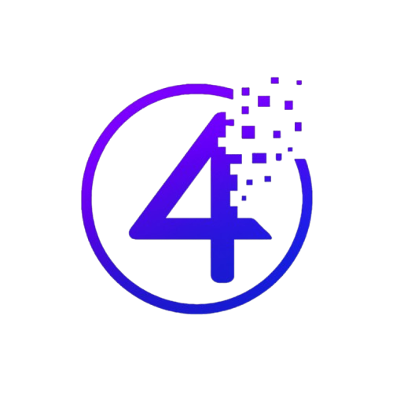

La gestión de calidad es una serie de procesos sistemáticos que le permiten a cualquier organización planear, ejecutar y controlar las distintas actividades que lleva a cabo. Esto garantiza estabilidad y consistencia en el desempeño para cumplir con las expectativas de los clientes.
La gestión de calidad varía según cada sector de negocio para el que se establecen sus propios “estándares”, es decir, modelos de referencia para medir o valorar el nivel de desempeño de la organizacion.
En esta sección de encuentra los fundamentos de la calidad en el desarrollo del software, en el se encuentran metricas, conceptos base, estándares, técnicas de prueba de softwares, introducción de herramientas de gestión de pruebas, seguimiento de defectos y análisis de calidad.
En esta sección se encuentran información sobre los diferentes enfoques para planificar, organizar y llevar a cabo el desarrollo de software. Se explica el ciclo de vida del software (SDLC), los modelos tradicionales y ágiles así como las metodologías ágiles. También contiene imágenes para facilitar la comprensión de cada enfoque, ventajas, limitaciones y casos de uso.
En esta sección se muestra inform ación referida a las metodologías. Se describe a detalle Scrum, incluyendo sus roles, eventos y artefactos, y se presenta Kanban como una herramienta visual y flexible para la gestión de procesos. El objetivo es que el usuario pueda comprender cómo aplicarlas en proyectos reales.
En esta sección se encuentra material para reforzar el aprendizaje. Incluye un glosario con los términos más importantes, preguntas frecuentes para resolver dudas comunes, enlaces a recursos externos para seguir investigando, ejercicios y casos prácticos que ponen en práctica los conceptos aprendidos.
En esta sección se encuentran dos herramientas especiales. Un comparador de metodologías para poder analizar sus diferencias y de esta manera poder ver sus puntos fuertes y débiles. La otra herramienta es una encuesta la cual indica que metodología es la mejor para tu proyecto.